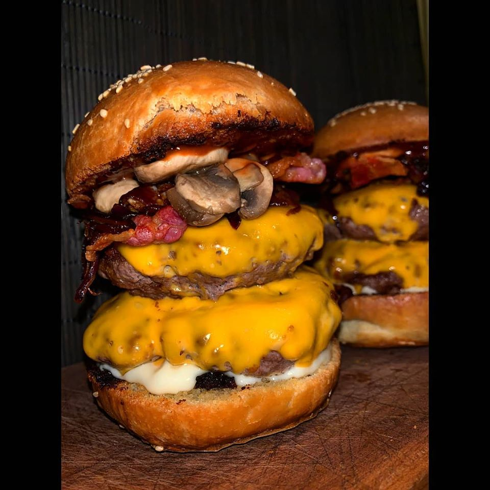

Kossuth Burger

Ingredients:
- 2 cloves garlic
- 350g ground beef
- salt, black pepper
- 1 tablespoon vegetable oil
- 2 slices cheese, such as swiss, cheddar, or american, optional
- 2 hamburger buns
- topping of your choice, for serving
Time: 120 minutes
Steps:
- Divide the beef into 2 (2-3cm) patties.
- Season on both sides with salt and pepper.
- Heat a large cast-iron skillet over medium-high heat. Add the oil to the pan and swirl to evenly coat. Place the patties in the skillet and cook, undisturbed, on the first side for 5 minutes, until a brown crust forms.
- Flip the patties, top each with a slice of cheese (optional), and cook, undisturbed, until the patties are browned on the other side, the cheese is melted, and the meat is cooked through, about 5 minutes more for medium-well doneness.
- Remove the patties from the pan and transfer to a clean cutting board. Let rest for about 5 minutes.
- Place the burger patties on buns and serve with your favorite toppings and sauces.